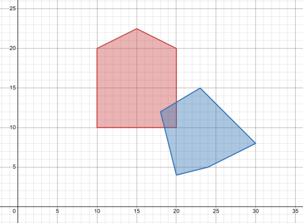
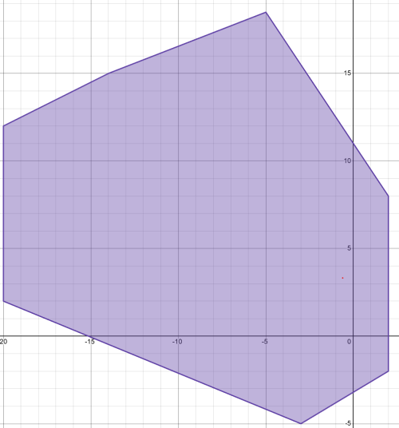
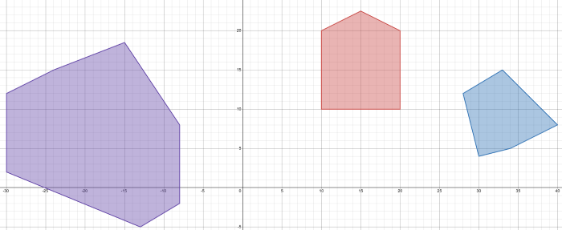
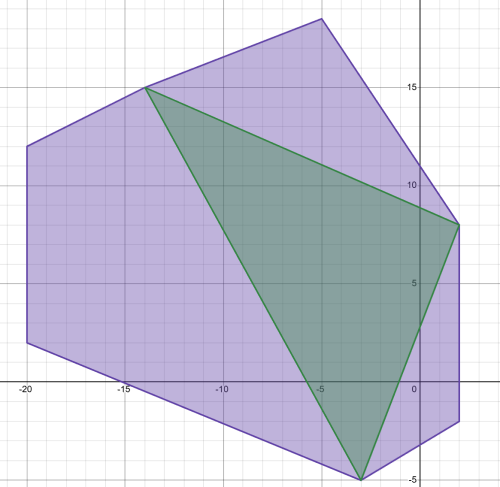
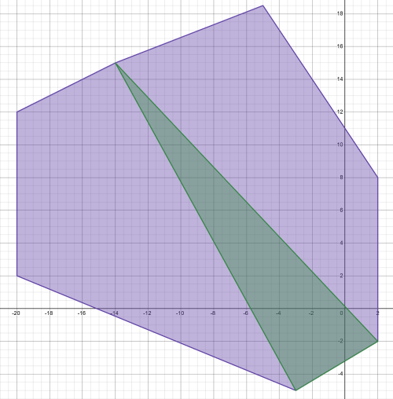
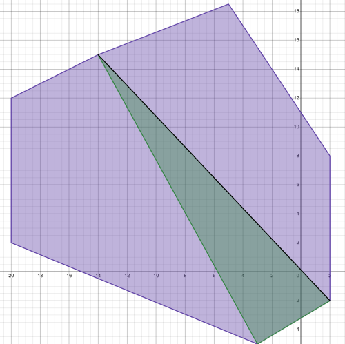
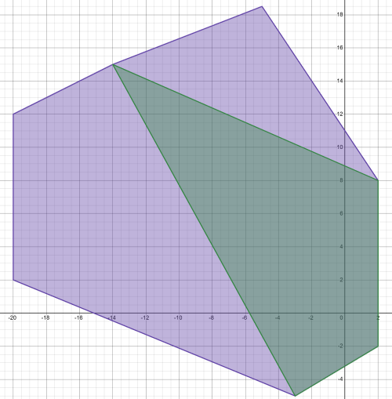
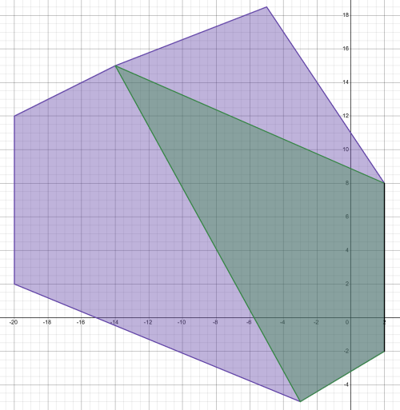
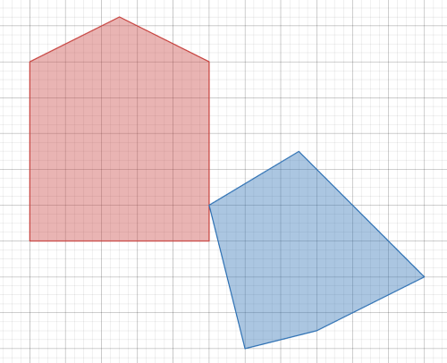

Collisions
Collisions were a big area I worked on for our Quackworks engine, the methodology of how I chose the algorithm, how it works and the problems faced implementing it are detailed here.
Collisions were a big area I worked on for our Quackworks engine, the methodology of how I chose the algorithm, how it works and the problems faced implementing it are detailed here.
I have previously come across Octrees and their 2D counterparts in Quadtrees as a method of handling broad phase collision. However, these work on the idea of splitting a pre-defined space, such as the space on screen, but as the physics aims to be isolated from any game terms like a games camera it would be difficult to define the space the quadtree would need to cover, and prematurely defining a ridiculously large quadtree may cause more complexity and less efficient collision detection. On top of this quadtrees run into the issue where objects with an area may not fit exactly into pre-defined regions and handling these edge cases reduces the efficiency of the algorithm and ignoring them leads to unrealistic physics.
Box2D[2] uses a 'dynamic tree' to handle it's broad phase and upon further research with Real Time Collision Detection[1] it follows the principles of a Bounding Volume Hierarchy tree. This is a method by which a tree is incrementally constructed using bounding volumes around the bodies in the physics simulation and the Surface-Area-Heuristic (SAH) to determine the cost of putting nodes in certain areas of the tree. The total area covered only covers the area of the bodies in the simulation and there are no edge cases as each volume is relative to the bodies rather than the space unlike Quadtrees. The plan was of course then to implement this method of broad phase collision detection.
This method takes the time complexity to check collisions from O(n^2) (every object against every object) where n is the number of bodies that have to check for collisions to O(n h), where h is the height of the tree when the tree is unblanced, or even better to O(n log n) when the tree is balanced. Additionally these checks use simple primitives rather than complex polygons to test these collisions meaning they are a lot faster than a narrow phase collision check.
The downside of this of course is needing to construct the tree and move bodies around in it as they move in the physics world. Box2D[2] has a nifty way of improving this. Instead of only using a tight bounding volume around the object to be inserted into the tree like other implemenetations, such as Real-Time Collision Detections[1] it instead uses an enlarged one, and hence only needs to update the enlarged one in the tree when the tight one is no longer encapsulated by the enlarged one, greatly reducing the amount of cases where the tree needs to be updated as often times bodies are unlikely to leave this enlarged volume in the space of a few frames. This optimisation was included in the engines implementation of the BVHTree. The trade-off for this is of course that querying the tree may now report more false positives for broad phase collisions meaning more costly narrow phase checks need to be made than before. Given more time it would be useful to test whether it may be more efficient to additionally test against the narrow bounding volumes of the suposed collisions from the enlarged volumes broad phase instead of going straight to narrow phase.
Initially, the class was made without a method of balancing the tree. Upon testing however, it was found that there are often scenarios where the tree can easily get unbalanced leading to a highly unoptimsed tree that didn't provide the level of performance increase the broad phase intended to improve, so tree balancing was implemented, which again required the use of the Surface-Area-Heuristic (SAH) which determines the associated cost of rotating nodes in the tree which means it's easy to determine if a swapping of those nodes will result in a cheaper cost and therefore a better balanced tree. This greatly improved the performance as was expected.
From this I have found Bounding Volume Hierarchy trees to be an effective method of broad phase collision detection and will have to compare how it performs compared to a quadtree implementation in future to see how they compare to each other.
Unfortunately, I realised that the local multiplayer was causing issues with the collisions only on the final day before upload. The class made use of an array that was being indexed incorrectly. I spent the final day refactoring this to use a much safer std::vector to help catch these errors, but this lead to an underlying logic error where leafs of the tree were not being properly set and so when querying the tree it would eventually reach memory that hadn't been properly initialised and would return no collisions even when there clearly were meant to be. I couldn't find the reason for why this was the case before the deadline and so the final implementation for the broad phase collision is simply testing every object against every object, no broad phase at all :(. From this I've learnt to use safe data types wherever possible, as using an std::vector from the beginning would have entirely avoided the issue. It has also shown me the usefullness of unit testing and made me wish we'd used it in our group. As with unit tests, the issue likely would've been caught a long time before the final day, when there was still time to resolve it.
For narrow phase collision I have previously used Separating Axis Theorm (SAT) to help perform collision detection, but ran into issues when attempting to perform collision resolution due to it being difficult to find the closest point on two dynamic bodies. Additionally, the group initially looked at seeing if we could expand the engine to work in a 3D manner. SAT performs worse in 3D as the number of axis' to test against increases, and with the plan for the engine to be able to handle any sort of convex polygon on top of this, SAT rapidly deteriorates from the powerhouse it is in 2D.
Looking for alternatives found that both Bullet[3] and Box2D[2] use a method called Gilbert-Johnson-Keerthi distance algorithm (GJK). Looking further into this algorithm seems like it's overkill for a 2D system as 2D shapes likely don't have enough vertices where SAT will perform much worse than the GJK algorithm, the catch and the reason why these big name physics engines use GJK instead is due to the fact that it turns the collision check from a polygon-to-polygon collision check into a point-to-polygon collision check using the Minkowski Sum, and finding the closest points for the collision resolution is therefore much more trivial using the Expanding Polytope Algorithm (EPA).
It was thus decided to use the GJK algorithm for these reasons, implementing it came with its fair share of issues however.
The first major roadblock when working with GJK & EPA was figuring out how the algorithms actually worked, as they are not very intuiative algorithms. The article by Winter was extremely helpful in breaking down each individual step. As well as Real Time Collision Detection[1] once I was familiar with the terms.
GJK works on the principle that if the Minkowski Difference of two convex polygons cover the origin (0, 0) then the two polygons are colliding. Calculating the Minkowski Difference of two polygons is not cheap however as it requires subtraction from every vertex on the first polygon to each vertex on the second, and then sweeping out the area this new polygon covers. As one could tell, as the number of vertexes in the polygons climbs the number of calculations made quickly scales.
Say we have two convex polygons like seen below. ShapeA (leftmost & red) & ShapeB(rightmost & blue). Visually we can see these objects are colliding.

And the Minkowski Difference covers the origin, meaning they Collide!

Moving ShapeB out of ShapeA shows the Minkowski Difference no longer covers the origin so they aren't colliding.

To circumvent the cost of the Minkowski Difference the GJK algorithm uses 'support points'. These points are the points in an extreme direction of the Minkowski Difference. Using this is a much quicker way of sweeping out the entire area covered by the Minkowski Difference rather than calculating each and every vertex. Once again sweeping the area is still a costly calculation, especially when you consider a polygon could have a large number of vertices in many different directions. How would you know when you've fully swept out the area.
Luckily, this doesn't have to be considered as to prove there is a collision we only need to know if the area covers the origin, and we can do this with a simplex. A simplex is the simplest polytope, the polytope with the least vertices, that can be represented in a given dimension. For example, a 0D simplex is simply a point, a 1D simplex is a line, a 2D simplex is a triangle, a 3D simplex is a tetrahedron and so on. As the algorithm only ended up being implemented in 2D in conjunction with the engines needs this will explain through the 2D case.
What a simplex does for algorithm means that given at least 3 support points we can construct a triangle, the 2D simplex, and see whether that triangle covers the origin, rather than having to sweep out the entire polygon. We start by choosing any direction, the engine uses the direction between the centers of the objects as it improves the algorithms performance, since this direction is often towards the point of collision and guards against an edge case that will be discussed later (Foreshadowing). Then the reverse direction. Finally for it's final point we choose a direction perpendicular to both those directions using the cross product...
This was the second major roadblock. I didn't realise at the time of choosing the algorithm, but the Cross Product doesn't really exist in 2D. The cross product provides a vector that is perpendicular to the two vectors given to it. Which in the case of two vectors with only 2D components, will only ever return 0 for both those 2D components as the perpendicular to these is a vector in 3D. This caused several issues with not just GJK but also EPA, and several times work around solutions were implemented to no avail. It even got to the point where I would choose a random direction, but that of course would cause the algorithm to spiral, never exiting or exiting too early if it comes across a simplex it has seen before. Eventually, using a technique called the Triple Product that provides a resultant vector perpendicular to one of the vectors while in it's same plane gave some semblance of a result. However, this ran into a new issue where the provided direction vectors aligned directly with an edge on the original shape the triple product would return a null vector and cause the algorithm to early exit as it thought it had backtracked on itself. To solve this I ensured the initial direction was not aligned and finally the algorithm worked. (Figuring this all out took forever ☺ ).
With the algorithm no longer forming degenerate simplexes we can visualise what this simplex does for us. The below image shows the first simplex isn't what we're looking for.

However, on the next iteration we can see that the simplex does cover the origin and so our query is complete. In the case where we come across a simplex we have seen before, or searching for a new direction yields a point already contained by the simplex we can be assured there is no collision and exit the algorithm with no collision.

Now that we've discovered there is a collison, for the engine to deal with it we need to separate these objects. For this we need a vector to separate them by and how far in the direction of that vector to separate them by. This is where EPA comes into play.
EPA takes the simplex created by GJK as it's starting point. Once again the Minkowski Difference can tell us the information we need to know. For the objects to not be colliding the minkowski difference needs to no longer cover the origin. So by, searching through our simplex for the closest edge/point to the origin we can figure out how far we need to move by. However, the simplex isn't guaranteed to run along the edge of the Minkowski Difference and so if the edge we find is not on the edge, we need to expand our simplex into a polytope to contain the support point in the direction of the previous edge. It looks like this.
The first closest edge is clearly the one highlighted black. We search in the normal direction of this edge facing towards the outer edge of the shape. This was another area of issue I ran into with the algorithm, as depending on the winding order of the vertices of the simplex and at a higher level the shapes, the outward facing normal is the reverse of the inward facing normal. This required a check to figure out the winding of the simplex before being able to find the correct normal.

We search for a support point further in that direction (a point that doesn't make up the current edge) and find one, and so expand our polytope.

There is an interesting edge case with EPA where two edges are equidistant from the origin. This is solved by considering the vector between the objects centers and taking the edge normal most in that direction, however this may be better solved by considering the shapes velocities prior to the impact to decide which edge should be used here as in the case of aligned shapes it may favor one axis. Searching for a further point in that direction provides a point on our current closest edge meaning we have our answer.

The normal is the normal of the edge, and the separation distance is the distance from the edge to the origin. All that's left from a purely collision standpoint is to separate the objects by this amount. A distance of 2 in the axis (1,0).

Voila, collisions. Looking lot easier than the time I spent learning and implementing this algorithm. From there the rest of collision resolution is a topic I've come across before and only gets as deep as you want it to. Some simple friction, restitution and separation with regards to mass is calculated by the engine.
Despite it being a large time sink for the projects physics, I think the helpfullness of the GJK & EPA algorithm returning the information for the closest feature / point is highly useful for collisions. With more iterations of the algorithm you can also construct collision manifolds for even greater collision resolution and so if done again I would still choose GJK & EPA. The algorithm, at least for the demo created performs sufficiently well, but a side by side comparison between other methods like SAT should still be explored to see if they provide better results given more time with the project.
[1]: Ericson, C. (2005) Real-time collision detection. Amsterdam: Elsevier. [2]: Catto, E. (2008) Box2D. Available at: https://box2d.org/. [3]: Coumans, E. (2013) bullet3. Github Repository. Available at: https://github.com/bulletphysics/bullet3.